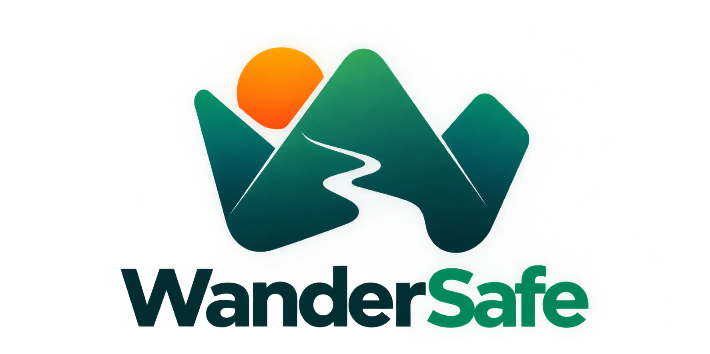

Travel & Emergency Platform
WhiteMountain
Outdoor travel. Never lose anyone.

WhiteMountainOutdoor travel. Never lose anyone.
Guides stream each traveller's position over WebSockets, backed by PostGIS history and Redis geo-cache. See the whole group move in real time.
When the network disappears, devices keep talking through Nearby Connections and a local Wi-Fi hotspot, then sync once a link returns.
A BLE proximity radar turns a missing teammate into a direction and a distance, so a search converges on the last few metres.
One tap fans the distress signal outward until a human answers.
Weather, places and routes are gathered and synthesized by Gemini into a scored, day-by-day itinerary.
WhiteMountain — outdoor travel, tracked and never alone.